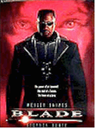
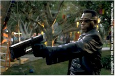
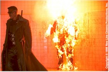

Contents | Features | Reviews | News | Archives | Store |
 |
|
| Movie Credits | Buy It! |
Blade
Review by Elias Savada
Posted 28 August 1998
|  | Directed by
Stephen Norrington. Starring Wesley Snipes,
Stephen Dorff, Written by David S. Goyer, based on characters
created by |
In adapting the 25-year-old comic strip to the big screen, the producers, director Stephen Norrington, writer David S. Goyer (Dark City), and star Snipes are going for the jugular, in much the same manner as Spawn, Steel, Barb Wire, and Judge Dredd, several of the more recent efforts adapted from what we used to call the funny pages. There’s no charm here and not much laughter, just relentless meat and potatoes, and not too much of the latter. Snipes cuts a dashing figure as the half-man, half-vampire ("The power of an immortal. The soul of a human. The heart of a hero. Yada, yada, yada."), but his no-nonsense attitude makes the character a one-dimensional undead-slaying machine. My son, a comic book aficionado, tells me that this role was made for Snipes. I guess the star felt the same way, as he’s also one of the film’s producers. The typical patrons distributor New Line and Norrington, an seasoned effects and music-video director on a sophomore binge (after his low-budget Death Machine four years ago), are after are the older teenage through 30s crowd (males for the destructive energy, females for Wesley), and what a perfect time to release the film--the tail end of summer vacation…kids still out of school. We critics may be complaining, but Snipes is having a fine laugh on the way to the bank.
Basically Blade and his aging sidekick Whistler (Kris Kristofferson, also seen in Dance With Me, but with or without make-up, neither performance much to talk about) team up with Karen Jensen, a convenient hematologist rescued from a vampire’s dastardly incision and enlisting herself to find a medical cure for the "retro-virus." Strange how she manages to "borrow" hundreds of thousands of dollars worth of equipment and instantly relocate it among Blade’s industrial warehouse hideout. Bet if she had time, she’d float an IPO for financial backing. Our hero, infected pre-birth way back in 1967 when a vampire contaminated his mother, is raised since a teenager by Whistler, who has his own sad tale. The pair had been concocting a special serum to control Blade’s blood hunger, while also manufacturing silver bullets and spikes, essence of garlic mace, and other techno-vamp weapons, when the new gal on the block joins their party in the ferocious fight (supplemented with numerous digital special effects and swooshing saber swings). The triumvirate face off against punk renegade "suckhead" leader Deacon Frost (Stephen Dorff) and his ghoulish goons, among them the crispy fried and surly multiple-re-amputee Quinn (Donal Logue) and flatulent blob Pearl (Eric Edwards), a Jabba the hut clone, and the "familiars," support-staff Renfields hoping for a sideways promotion. An ingenious sort, Frost simultaneously matches wits with Blade, plots against his pure masters (including Udo Kier, a staple of numerous 1970s Italian horror films but left for dead until current resurrection), and unravels ancient vampiric texts to awaken a primitive blood god. Eventually all met for the bloodfight at the Temple of Eternal Night (and for Blade a family reunion), although the good doctor seemingly takes a back seat to most of the action.
The production design by Kirk Petruccelli is slick urban disco dark layered on a paper-strewn cityscape, but not as enjoyable or edgy as the settings for 1994’s The Crow, that still my favorite film of the made-from-a-comic-book genre. Over-glossed and done to death, Blade leaves us (unfortunately) with a "Let’s get out of here!" and the usual open-door, sequel-begging, ending with the crimson-drenched hero relocating to Moscow for another spiritual cleansing. As if the fall of the Russian ruble wasn’t enough to scare the locals over there.
Contents | Features | Reviews | News | Archives | Store
Copyright © 1999 by Nitrate Productions, Inc. All Rights Reserved.